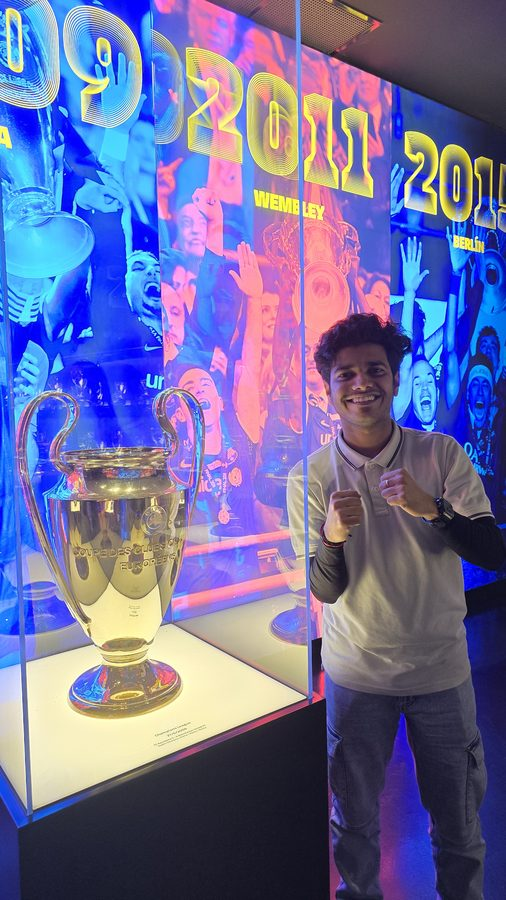
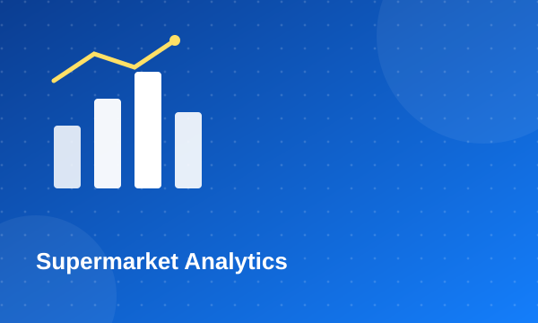
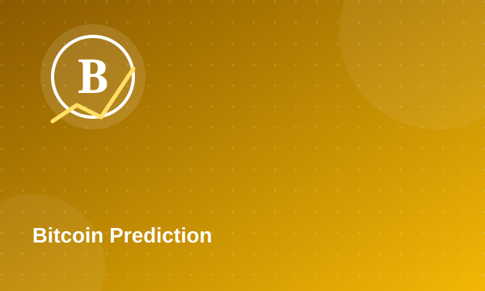
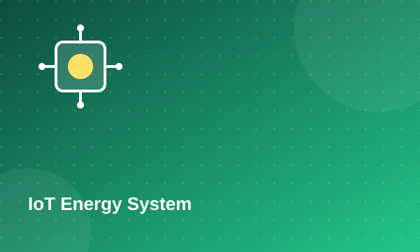
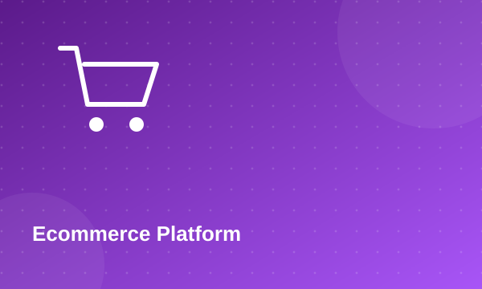
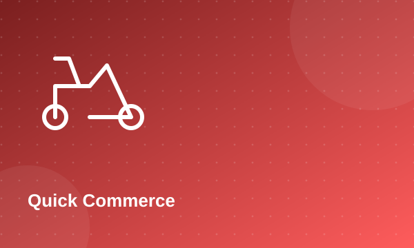
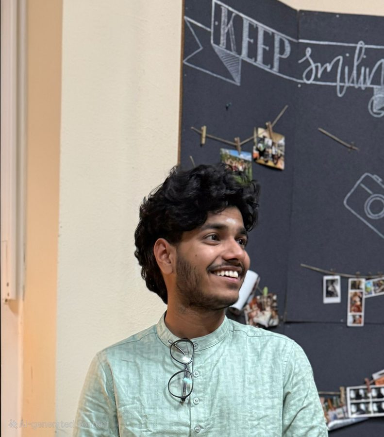

Python (Pandas, Seaborn, scikit-learn)
Experienced
Hello, I'm
|
Chennai · India


Get To Know More

Financial Data Engineer
HDFC Bank Ltd.

MBA Data Analytics
BSc Computer Science
I'm an MBA Data Analytics graduate and certified Six Sigma White Belt, currently working as a Financial Data Engineer at HDFC Bank Ltd., where I bridge technical data work — Python, SQL and Power BI — with business strategy to drive operational efficiency and informed decision-making. My background spans full-stack software development and international business, including an Erasmus+ DAAD exchange and an internship in Germany that sharpened my cross-cultural collaboration skills. I enjoy turning complex datasets into actionable insight, and I'm always looking for the next problem at the intersection of business and technology.
Explore My
Experienced
Experienced
Intermediate
Intermediate
Intermediate
Experienced
Experienced
Intermediate
Experienced
Intermediate
Intermediate
Experienced
My
Business Analytics, Financial Analysis, Marketing Strategy, Digital Marketing, Statistical Data Analysis
Erasmus Exchange Specialized Coursework in international business strategy and cross-cultural management, completed alongside the Erasmus+ DAAD exchange in Germany.
Programming, Business Analysis, IoT, Data Analysis, Project Management
Alteryx · 2025
IBM · 2025
CSSC · 2025
Assistant Professor & PhD Eligibility · 2025
Browse My Recent

Used Python (Pandas, Seaborn) to analyze supermarket sales and monopolistic market ecosystems, uncovering supply-chain insights presented to academic and business panels.

Statistical and ML-driven analysis of Bitcoin price trends to explore predictive modeling techniques for financial forecasting.

Raspberry Pi + C++ + Django system that dynamically optimizes energy consumption for residential and commercial settings.

End-to-end ecommerce web application covering catalog, cart and checkout flows.

Deployed as Junior Software Developer Intern at Inmakes Infotech — a Python/Django full-stack quick-commerce web application.
Beyond Borders
Selected for the Erasmus Exchange Program in Germany, gaining international business exposure and cross-cultural perspective.
Sept 2025 – Feb 2026 · Managed international students and events in a European multicultural setting; ran the "Data in Everyday Life" workshop and led 3 intercultural events under the Language Tandem Project.
Languages

Get in Touch